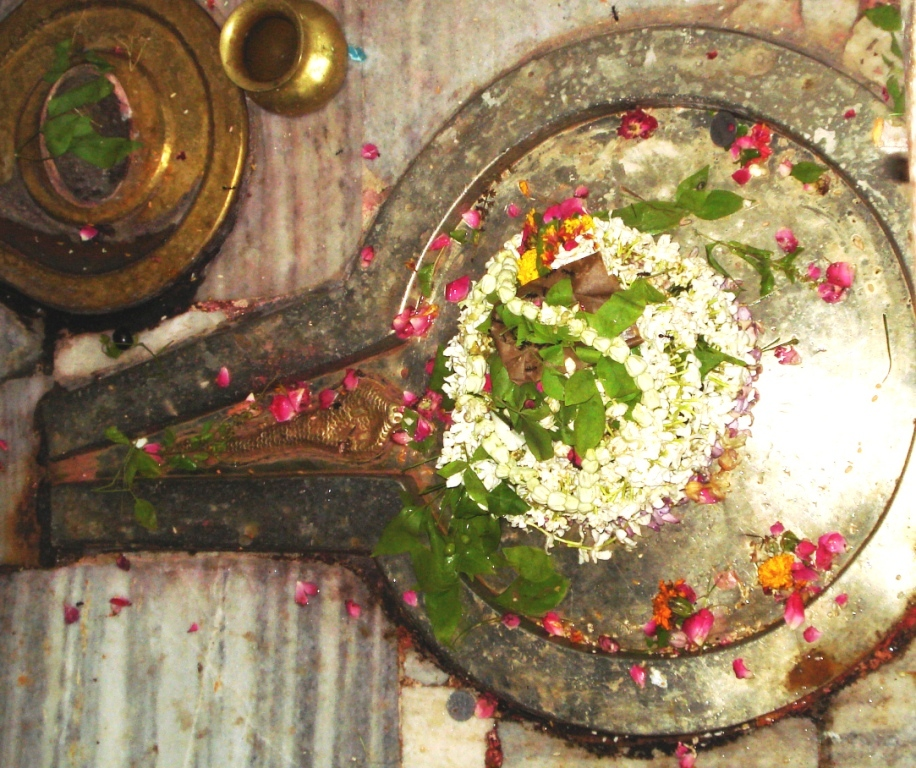

<?xml version="1.0" encoding="UTF-8"?><rss version="2.0"
	xmlns:content="http://purl.org/rss/1.0/modules/content/"
	xmlns:wfw="http://wellformedweb.org/CommentAPI/"
	xmlns:dc="http://purl.org/dc/elements/1.1/"
	xmlns:atom="http://www.w3.org/2005/Atom"
	xmlns:sy="http://purl.org/rss/1.0/modules/syndication/"
	xmlns:slash="http://purl.org/rss/1.0/modules/slash/"
	>

<channel>
	<title>Shukreshwar &#8211; Varanasi Temples</title>
	<atom:link href="index.html" rel="self" type="application/rss+xml" />
	<link>../../../../../index.html</link>
	<description>Temples of Varanasi as referred to in Kashi Khand</description>
	<lastBuildDate>Thu, 19 Jun 2025 05:16:46 +0000</lastBuildDate>
	<language>en-US</language>
	<sy:updatePeriod>hourly</sy:updatePeriod>
	<sy:updateFrequency>1</sy:updateFrequency>
	<generator>https://wordpress.org/?v=4.6.29</generator>
	<item>
		<title>SHUKRESHWAR</title>
		<link>../../../../../shiva-temples/shukreshwar/index.html</link>
		<pubDate>Tue, 11 May 2010 07:25:42 +0000</pubDate>
		<dc:creator><![CDATA[admin]]></dc:creator>
				<category><![CDATA[Other Shiva Temples (S-Y)]]></category>
		<category><![CDATA[Shiva Temples]]></category>
		<category><![CDATA[Shukreshwar]]></category>
		<category><![CDATA[marriage]]></category>
		<category><![CDATA[mrit]]></category>
		<category><![CDATA[shu]]></category>
		<category><![CDATA[shukra]]></category>
		<category><![CDATA[shukreshwar]]></category>
		<category><![CDATA[shukreshwar-ling-kashi]]></category>

		<guid isPermaLink="false">../../../../../p=500.html</guid>
		<description><![CDATA[Long time ago, Shukra came to Kashi, intalled a Shiv Ling, dug a Well and started worshipping Lord Shiva by offering various prayers.  He offered various types of flowers, leaves etc. in the course of his pooja.  Shukra thus prayed Lord Shiva for several years.  Despite his devotion, Lord Shiva did not appear before him. [&#8230;]]]></description>
				<content:encoded><![CDATA[<p>Long time ago, Shukra came to Kashi, intalled a Shiv Ling, dug a Well and started worshipping Lord Shiva by offering various prayers.  He offered various types of flowers, leaves etc. in the course of his pooja.  Shukra thus prayed Lord Shiva for several years.  Despite his devotion, Lord Shiva did not appear before him.</p>
<p>Shukra then started surviving by consuming the fumes of burnt rice husk and he continued his sincere prayers for a long long time.  Finally Lord Shiva appeared before him and blessed him with divine wish. Shukra started singing various kinds of praises of Lord Shiva and again started performing various Poojas.  Lord Shiva was overwhelmed by Shukra’s sincerity and stated that the latter will be regarded as his (Lord  Shiva’s) own son.</p>
<p>Lord Shiva also told him the secret of Mrita Sanjivini (elixir or potion capable of giving life to the dead).  Lord Shiva also granted that Shukra will shine in the Galaxy among all planets and those marriages which are cosummated with Shukra  in a favourable position will be blissful and happy marriages.  (Even today, when marriages are fixed, the astrologers ensure that Shukra’s planetary position is not adverse).</p>
<p>Those who worship the Ling installed by Shukra (Lord Shiva named this Ling as Shukreshwar) will be blessed with all happiness and attainment in life.  A devotee who performs pooja etc. of Shukreshwar Ling for one year with complete devotion will be blessed with good children and will attain all happiness.  After narrating all these, Lord Shiva disappeared into the Shukreshwar Ling.   (Kashi Khand, Chapter 16).</p>
<p></p>
<p style="text-align: center;"><strong>(SHUKRESHWAR)</strong></p>
<p>Even today, when a person is having a very good time, people regard him as having a Shukra Dasa (time allotted to Shukra in a person’s life).  Similarly, for marriage purpose Shukra is given much importance.</p>
<p>&nbsp;</p>
<p><strong>&#8212;&#8212;&#8212;&#8212;&#8212;&#8212;&#8212;&#8212;&#8212;&#8212;&#8212;&#8212;&#8212;&#8212;&#8212;&#8212;&#8212;&#8212;&#8212;&#8212;&#8212;&#8212;&#8212;&#8212;&#8212;&#8212;&#8212;&#8212;&#8212;&#8212;&#8212;&#8212;&#8212;&#8212;-</strong></p>
<p><strong> </strong></p>
<p><strong>Kashi Khand, Chapter 16, Shlok 124</strong></p>
<p><strong> </strong></p>
<p><strong>त्वयेदं स्थापितं लिङ्गं शुक्रेशमिति संज्ञितम् </strong></p>
<p><strong>येऽर्चयिष्यन्ति मनुजास्तेषां सिद्धिर्भविष्यति</strong></p>
<p>&nbsp;</p>
<p><strong>(Lord Shiva says to Shukra Dev), people who worship this ling named Shukrashwar, installed by you, will get success/achievement everywhere. </strong></p>
<p><strong> </strong></p>
<p><strong>&#8212;&#8212;&#8212;&#8212;&#8212;&#8212;&#8212;&#8212;&#8212;&#8212;&#8212;&#8212;&#8212;&#8212;&#8212;&#8212;&#8212;&#8212;&#8212;&#8212;&#8212;&#8212;&#8212;&#8212;&#8212;&#8212;&#8212;&#8212;&#8212;&#8212;&#8212;&#8212;&#8212;&#8212;&#8212;</strong></p>
<p>&nbsp;</p>
<p><strong>There is a well called Shukra Koop nearby which is supposed to have divine properties.</strong></p>
<p>&nbsp;</p>
<p><strong>&#8212;&#8212;&#8212;&#8212;&#8212;&#8212;&#8212;&#8212;&#8212;&#8212;&#8212;&#8212;&#8212;&#8212;&#8212;&#8212;&#8212;&#8212;&#8212;&#8212;&#8212;&#8212;&#8212;&#8212;&#8212;&#8212;&#8212;&#8212;&#8212;&#8212;&#8212;&#8212;&#8212;&#8212;-</strong></p>
<p><strong>Kashi Khand, Chapter 97, Shlok 228</strong></p>
<p><strong>शुक्रेशादग्रत: पूज्य: कचेश इति संज्ञित:</strong></p>
<p><strong>शुक्रकूपमुपस्पृश्य   हयमेधफलं लभेत्</strong></p>
<p>&nbsp;</p>
<p><strong>In front of Shukreshwar Ling, is Kacheshwar Ling which is worthy of worship.  Nearby is Shukra Koop (Well) and if a person touches the water of this well, this will yield the punya result of performing Ashwa Medh Yagya. </strong></p>
<p><strong>&#8212;&#8212;&#8212;&#8212;&#8212;&#8212;&#8212;&#8212;&#8212;&#8212;&#8212;&#8212;&#8212;&#8212;&#8212;&#8212;&#8212;&#8212;&#8212;&#8212;&#8212;&#8212;&#8212;&#8212;&#8212;&#8212;&#8212;&#8212;&#8212;&#8212;&#8212;&#8212;&#8212;&#8212;&#8212;</strong></p>
<h4></h4>
<h4><span style="text-decoration: underline;">LOCATION OF SHUKRESHWAR</span></h4>
<p>Shukreshwar is located in a lane parallel to the lane occupied by Annapurna temple and Visweshwar temple at D-8/30, Kalika Galli.  The place of worship is open practically throughout the day.</p>
<h4></h4>
<p><strong>Please watch our YouTube Video about Shukreshwar at following Link</strong></p>
<h4></h4>
<p><a href="https://www.youtube.com/watch?v=mSfeX2v5ESA&amp;t=19s">https://www.youtube.com/watch?v=mSfeX2v5ESA&amp;t=19s</a></p>
<h4></h4>
<h4><span style="text-decoration: underline;">TYPES OF POOJA</span></h4>
<p>The temple is open for darshan through a window throughout the day.  There are no specific poojas. People only worship this deity. For any special Pooja, please contact Shri Rohit Kapooria at 7839361621,</p>
]]></content:encoded>
			</item>
	</channel>
</rss>
